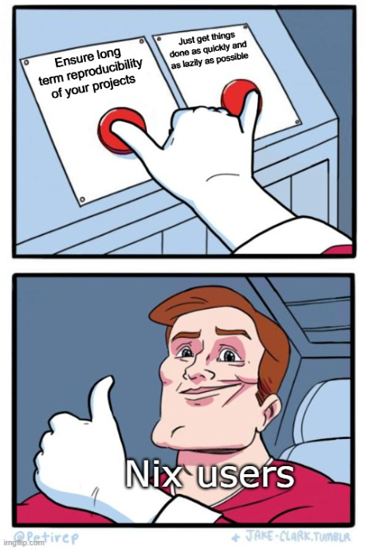

Reproducible data science with Nix, part 7 – Building a Quarto book using Nix on Github Actions

Back in June I self-published a book on Amazon’s Kindle Direct Publishing service and wrote a blog post detailling how you could achieve that using Quarto, which you can read here. The book is about building reproducible analytical pipelines with R. For the purposes of this post I made a template on Github that you could fork and use as a starting point to write your own book. The book also gets built using Github Actions each time you push new changes: a website gets built, an E-book for e-ink devices and a Amazon KDP-ready PDF for print get also built. That template used dedicated actions to install the required version of R, Quarto, and R packages (using {renv}).
Let’s take a look at the workflow file:
on:
push:
branches: main
name: Render and Publish
jobs:
build-deploy:
runs-on: ubuntu-22.04
steps:
- name: Checkout repo
uses: actions/checkout@v3
- name: Setup pandoc
uses: r-lib/actions/setup-pandoc@v2
- name: Setup R
uses: r-lib/actions/setup-r@v2
with:
r-version: '4.3.1'
- name: Setup renv
uses: r-lib/actions/setup-renv@v2
- name: Set up Quarto
uses: quarto-dev/quarto-actions/setup@v2
with:
# To install LaTeX to build PDF book
tinytex: true
# uncomment below and fill to pin a version
#version: 1.3.353
- name: Publish to GitHub Pages (and render)
uses: quarto-dev/quarto-actions/publish@v2
with:
target: gh-pages
env:
GITHUB_TOKEN: ${{ secrets.GITHUB_TOKEN }} # this secret is always available for github actions
As you can see, there are a lot of different moving pieces to get this to work. Since then I discovered Nix (if you’ve not been following my adventures, there’s 6 other parts to this series as of today), and now I wrote another template that uses Nix to handle the book’s dependencies instead of dedicated actions and {renv}. You can find the repository here.
Here is what the workflow file looks like:
name: Build book using Nix
on:
push:
branches:
- main
- master
jobs:
build:
runs-on: ubuntu-latest
steps:
- name: Checkout Code
uses: actions/checkout@v3
- name: Install Nix
uses: DeterminateSystems/nix-installer-action@main
with:
logger: pretty
log-directives: nix_installer=trace
backtrace: full
- name: Nix cache
uses: DeterminateSystems/magic-nix-cache-action@main
- name: Build development environment
run: |
nix-build
- name: Publish to GitHub Pages (and render)
uses: b-rodrigues/quarto-nix-actions/publish@main
env:
GITHUB_TOKEN: ${{ secrets.GITHUB_TOKEN }} The first thing you should notice is that this file is much shorter.
The first step, Checkout Code makes the code available to the rest of the steps. I then install Nix on this runner using the Determinate Systems nix-installer-action and then I use another action from Determinate Systems, the magic-nix-cache-action. This action caches all the packages so that they don’t need to get re-built each time a change gets pushed, speeding up the process by a lot. The development environment gets then built using nix-build.
Finally, an action I defined runs, quarto-nix-actions/publish. This is a fork of the quarto-actions/publish action which you can find here. My fork simply makes sure that the quarto render and quarto publish commands run in the Nix environment defined for the project.
You can see the book website here; read it, it’s explains everything in much more details than this blog post! But if you’re busy, read continue reading this blog post instead.
The obvious next question is why bother with this second, Nix-centric, approach?
There are at least three reasons. The first is that it is possible to define so-called default.nix files that the Nix package manager then uses to build a fully reproducible development environment. This environment will contain all the packages that you require, and will not interfere with any other packages installed on your system. This essentially means that you can have project-specific default.nix files, each specifying the requirements for specific projects. This file can then be used as-is on any other platform to re-create your environment. The second reason is that when installing a package that requires system-level dependencies, {rJava} for example, all the lower-level dependencies get automatically installed as well. Forget about reading error messages of install.packages() to find which system development library you need to install first. The third reason is that you can pin a specific revision of nixpkgs to ensure reproducibility.
The nixpkgs mono-repository is “just” a Github repository which you can find here: https://github.com/NixOS/nixpkgs. This repository contains Nix expressions to build and install more than 80’000 packages and you can search for installable Nix packages here.
Because nixpkgs is a “just” Github repository, it is possible to use a specific commit hash to install the packages as they were at a specific point in time. For example, if you use this commit, 7c9cc5a6e, you’ll get the very latest packages as of the 19th of October 2023, but if you used this one instead: 976fa3369, you’ll get packages from the 19th of August 2023.
This ability to deal with both underlying system-level dependencies and pin package versions at a specific commit is extremely useful on Git(Dev)Ops platforms like Github Actions. Debugging installation failures of packages can be quite frustrating, especially on Github Actions, and especially if you’re not already familiar with how Linux distributions work. Having a tool that handles all of that for you is amazing. The difficult part is writing these default.nix files that the Nix package manager requires to actually build these development environments. But don’t worry, with my co-author Philipp Baumann, we developed an R package called {rix} which generates these default.nix files for you.
{rix} is an R package that makes it very easy to generate very complex default.nix files. These files can in turn be used by the Nix package manager to build project-specific environments. The book’s Github repository contains a file called define_env.R with the following content:
library(rix)
rix(r_ver = "4.3.1",
r_pkgs = c("quarto"),
system_pkgs = "quarto",
tex_pkgs = c(
"amsmath",
"framed",
"fvextra",
"environ",
"fontawesome5",
"orcidlink",
"pdfcol",
"tcolorbox",
"tikzfill"
),
ide = "other",
shell_hook = "",
project_path = ".",
overwrite = TRUE,
print = TRUE)
{rix} ships the rix() function which takes several arguments. These arguments allow you to specify an R version, a list of R packages, a list of system packages, TeXLive packages and other options that allow you to specify your requirements. Running this code generates this default.nix file:
# This file was generated by the {rix} R package v0.4.1 on 2023-10-19
# with following call:
# >rix(r_ver = "976fa3369d722e76f37c77493d99829540d43845",
# > r_pkgs = c("quarto"),
# > system_pkgs = "quarto",
# > tex_pkgs = c("amsmath",
# > "framed",
# > "fvextra",
# > "environ",
# > "fontawesome5",
# > "orcidlink",
# > "pdfcol",
# > "tcolorbox",
# > "tikzfill"),
# > ide = "other",
# > project_path = ".",
# > overwrite = TRUE,
# > print = TRUE,
# > shell_hook = "")
# It uses nixpkgs' revision 976fa3369d722e76f37c77493d99829540d43845 for reproducibility purposes
# which will install R version 4.3.1
# Report any issues to https://github.com/b-rodrigues/rix
let
pkgs = import (fetchTarball "https://github.com/NixOS/nixpkgs/archive/976fa3369d722e76f37c77493d99829540d43845.tar.gz") {};
rpkgs = builtins.attrValues {
inherit (pkgs.rPackages) quarto;
};
tex = (pkgs.texlive.combine {
inherit (pkgs.texlive) scheme-small amsmath framed fvextra environ fontawesome5 orcidlink pdfcol tcolorbox tikzfill;
});
system_packages = builtins.attrValues {
inherit (pkgs) R glibcLocalesUtf8 quarto;
};
in
pkgs.mkShell {
LOCALE_ARCHIVE = if pkgs.system == "x86_64-linux" then "${pkgs.glibcLocalesUtf8}/lib/locale/locale-archive" else "";
LANG = "en_US.UTF-8";
LC_ALL = "en_US.UTF-8";
LC_TIME = "en_US.UTF-8";
LC_MONETARY = "en_US.UTF-8";
LC_PAPER = "en_US.UTF-8";
LC_MEASUREMENT = "en_US.UTF-8";
buildInputs = [ rpkgs tex system_packages ];
}This file defines the environment that is needed to build your book: be it locally on your machine, or on a GitOps platform like Github Actions. All that matters is that you have the Nix package manager installed (thankfully, it’s available for Windows –through WSL2–, Linux and macOS).
Being able to work locally on a specific environment, defined through code, and use that environment on the cloud as well, is great. It doesn’t matter that the code runs on Ubuntu on the Github Actions runner, and if that operating system is not the one you use as well. Thanks to Nix, your code will run on exactly the same environment. Because of that, you can use ubuntu-latest as your runner, because exactly the same packages will always get installed. This is not the case with my first template that uses dedicated actions and {renv}: there, the runner uses ubuntu-22.04, a fixed version of the Ubuntu operating system. The risk here, is that once these runners get decommissioned (Ubuntu 22.04 is a long-term support release of Ubuntu, so it’ll stop getting updated sometime in 2027), my code won’t be able to run anymore. This is because there’s no guarantee that the required version of R, Quarto, and all the other packages I need will be installable on that new release of Ubuntu. So for example, suppose I have the package {foo} at version 1.0 that requires the system-level development library bar-dev at version 0.4 to be installed on Ubuntu. This is not an issue now, as Ubuntu 22.04 ships version 0.4 of bar-dev. But it is very unlikely that the future version of Ubuntu from 2027 will ship that version, and there’s no guarantee my package will successfully build and work as expected with a more recent version of bar-dev. With Nix, this is not an issue; because I pin a specific commit of nixpkgs, not only will {foo} at version 1.0 get installed, its dependency bar-dev at version 0.4 will get installed by Nix as well, and get used to build {foo}. It doesn’t matter that my underlying operating system ships a more recent version of bar-dev. I really insist on this point, because this is not something that you can easily deal with, even with Docker. This is because when you use Docker, you need to be able to rebuild the image as many times as you need (the alternative is to store, forever, the built image), and just like for Github Actions runners, the underlying Ubuntu image will be decommissioned and stop working one day.
In other words, if you need long-term reproducibility, you should really consider using Nix, and even if you don’t need long-term reproducibility, you should really consider using Nix. This is because Nix makes things much easier. But there is one point where Nix is at a huge disadvantage when compared to the alternatives: the entry cost is quite high, as I’ve discussed in my previous blog post. But I’m hoping that through my blog posts, this entry cost is getting lowered for R users!